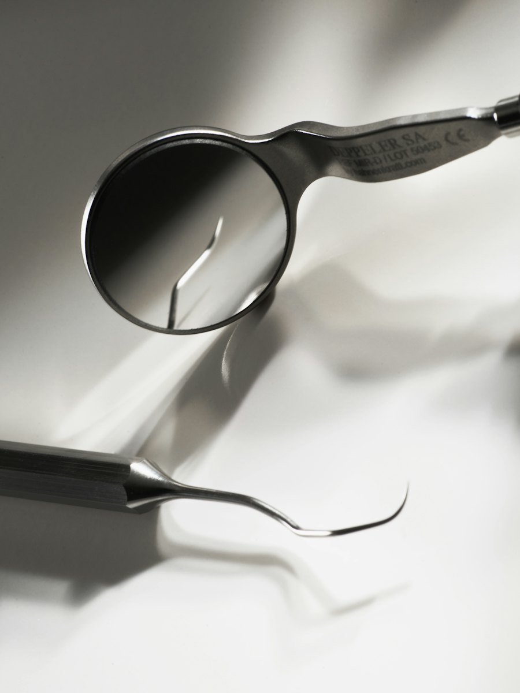
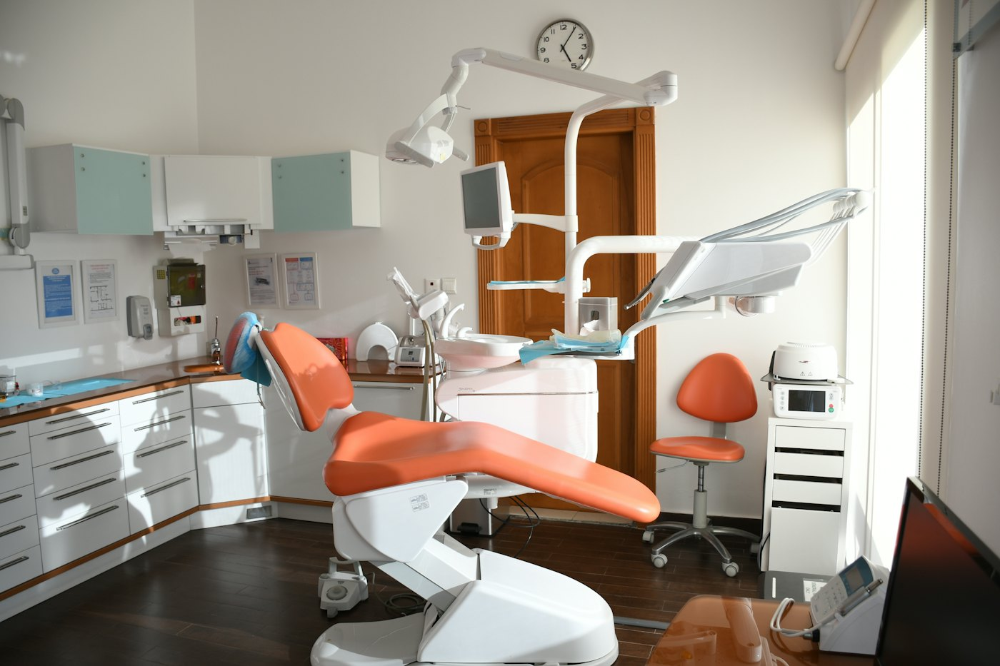
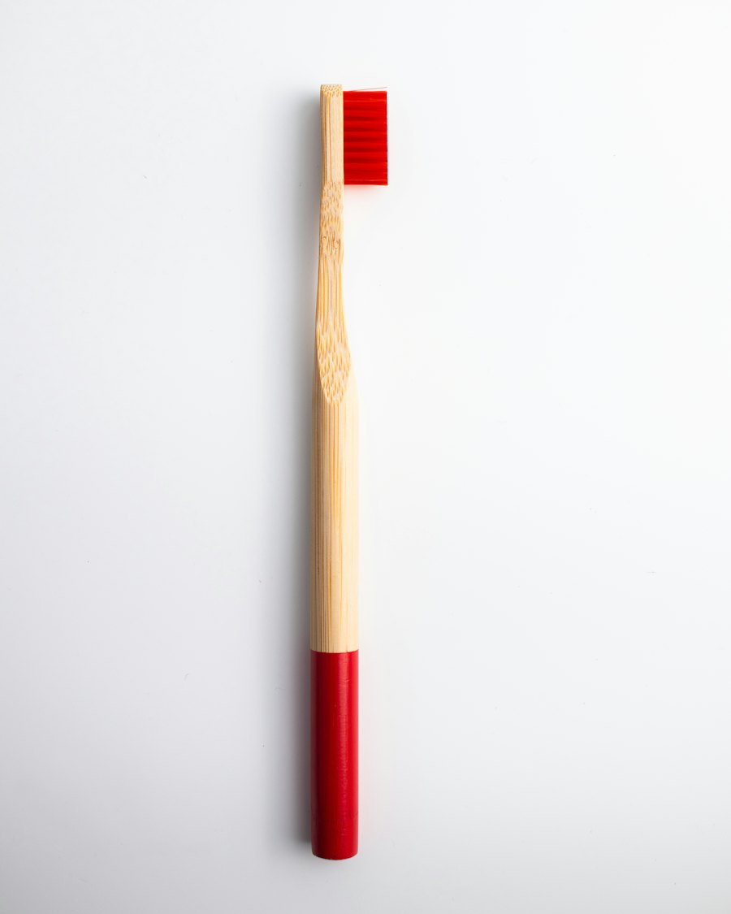

Odontologia em Juiz de Fora
Sorrir também é bem‑estar.
Implante, protocolo, aparelho, prótese, canal e facetas no mesmo consultório — com cada etapa explicada antes de começar.

A clínica
Mais de dez anos de sorrisos em Juiz de Fora.
A Bem-Estar Odontologia nasceu de uma ideia simples: ir ao dentista não precisa ser motivo de tensão. Por isso, a conversa vem antes do procedimento — você entende o que está acontecendo com o seu sorriso e quais são os caminhos possíveis.
Do aparelho ao implante, do canal às facetas, o cuidado acontece no mesmo lugar, com o mesmo olhar atento.
- +10
- anos cuidando de sorrisos
- 6
- frentes de tratamento
Tratamentos
Tudo o que o seu sorriso pede, num só lugar.
A indicação de cada tratamento depende sempre de uma avaliação individual. Passe o cursor — ou toque — para conhecer cada um.
-
Implante
Um pino de titânio substitui a raiz de um dente perdido e serve de base para a nova coroa.
-
Protocolo
Prótese fixa sobre implantes para quem perdeu os dentes de uma arcada inteira.
-
Aparelho
Ortodontia para corrigir a posição dos dentes e o encaixe da mordida, com acompanhamento a cada etapa.
-
Prótese
Coroas, pontes e próteses que repõem dentes perdidos e devolvem função à mastigação.
-
Canal
Trata a parte interna do dente quando ela está inflamada ou infeccionada, buscando preservá-lo.
-
Facetas e estética
Lâminas finas sobre a face visível dos dentes para harmonizar forma e cor, após avaliar a saúde bucal.
A experiência
Entender cada passo faz parte do cuidado.
- Escuta
A primeira consulta começa pelo que você sente e pelo que te incomoda.
- Explicação
Antes de qualquer procedimento, você entende o diagnóstico e as opções.
- Acompanhamento
Do planejamento à última sessão, com o mesmo consultório ao seu lado.


“Um sorriso cuidado é um sorriso tranquilo.”
Imagens ilustrativas. Veja o consultório real no Instagram da clínica.
Quem cuida de você
Dra. Pâmela Andrade
Cirurgiã-dentista · CRO-MG 44621
Atendimento atento, sem pressa, e o cuidado de explicar cada etapa — principalmente no tratamento ortodôntico. É o que os pacientes costumam lembrar.
Relatos de pacientes no Instagram (abre em nova aba)Dúvidas frequentes
Como faço para agendar?
Pelo WhatsApp (32) 98402-1717. É só mandar uma mensagem contando o que você precisa que o horário é combinado com você.
Como funciona a primeira consulta?
Tudo começa por uma avaliação: o caso é examinado, conversado e as possibilidades de tratamento são explicadas. Traga suas dúvidas — elas fazem parte da consulta.
Quais tratamentos a clínica oferece?
Implante, protocolo, aparelho ortodôntico, prótese, tratamento de canal, facetas e estética. A indicação de cada um depende da avaliação.
Perdi um dente. Implante ou prótese?
Depende de fatores como a saúde da gengiva, a quantidade de osso e as suas necessidades. Só a avaliação clínica permite indicar o melhor caminho.
Quais são os horários de atendimento?
Os horários são combinados diretamente pelo WhatsApp, de acordo com a agenda disponível.
Agendamento
Vamos cuidar do seu sorriso?
Mande uma mensagem e agende sua avaliação.
Conversar pelo WhatsApp